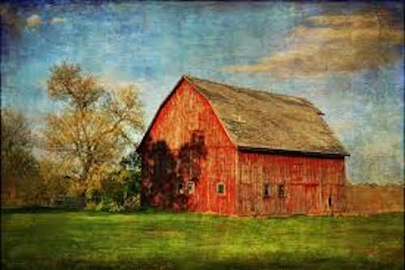

This is a web page about barns. There doesn't seem to be much about the two things in common. One is a technological construct as a way to store and disseminate information. The other is building type for storing animals, their food, and equipment. But in a way, they are both containers. We used to think about barns existing only in the rural landscape. We also used to think about web pages as super-modern and high-tech. Although web pages rely on technology to funtion, they can look as weathered and old fashioned as a barn on a country road.
Most barns are distinguished from one another by their architectural style. The easiest way to divide them up is to do so based on their construction. Barns are and were built using different materials because of what resources are available to the individual builder. In the connected pages are some examples of very different barns from all over the world.The image below is a typical romanticized red barn, but the building type is much more complex than this iconic american version. Take a look at the links above for an idea of how barns and their style have been used differently at home and abroad.
